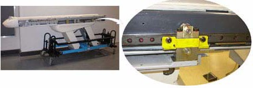
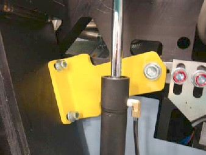

Operating Documentation
Direction 5193574-800, Rev# 22
LightSpeed 7.X Service Methods
Module Version 1.0, Version Date 4/22/10
Operating Documentation |
| Required Persons | Preliminary Reqs | Procedure | Finalization |
|---|---|---|---|
| 1 (FE or Mechanical Installer) | Not Applicable | 20 mins | Not Applicable |
| Item | Qty | Effectivity | Part# | Manufacturer | |
|---|---|---|---|---|---|
| Standard Installation Tool Kit | 1 | - | - | - | |
| 10 mm Hex wrench | 1 | - | - | - | |
| 14 mm Hex wrench | 1 | - | - | - | |
| Condition | Reference | Effectivity |
|---|---|---|
All table mechanical alignment procedures are completed. | - | - |
The table is on the floor with at least one anchor in place. | - | - |
Remove the right top cover of the table.
A yellow shipping lock is located on the right side of the table.
Unscrew the two bolts and remove the shipping lock.
Illustration 1: IMS Shipping Lock

Re-install the table side cover. See section on Table Cover Installation.
| ||||
| Potential for personal injury. | ||||
| If there is a load on the tilt bracket, removal may cause the gantry to suddenly tilt all the way back due to a possible lack of hydraulic pressure. | ||||
| If tilt bracket is not loose, stop and put the M12 bolts back in and tighten the tilt bracket back in place. |
Remove the M12 bolts using a 10 mm Hex wrench. (See Illustration 2.)
Illustration 2: Gantry Tilt Bracket Removal

Loosen the M16 bolt 1-2 turns and check the gantry tilt bracket; it should be loose to the touch. If the tilt bracket is loose, continue with step 3.
If the tilt bracket is loose, proceed to Step 3.
If the tilt bracket is NOT loose, check the hydraulic connections for leaks or lack of fluid. You must wait until the system can be energized to use the tilt controls to relieve the load on the tilt bracket prior to removal. Do not use force to remove the bracket.
If the bracket feels loose, remove the M16 bolt using a 14 mm Hex wrench.
Remove the bracket.
Reinstall the gantry rear covers and the scan window.
Store the brackets in the service cabinet.
Refer to Illustration 3 for the location of items in the table dolly.
Remove one, long side (stabilizer) rail, using the quick disconnect pins. There is one pin on each end of the bar.
Carefully slide the bar out and place the bar on the side, out of the traffic area.
Use the 19 mm wrench or 14 mm hex wrench to remove the bolts on each side of the smaller front table attachment bracket. Remove the quick release pins from each side. Remove the bracket.
Use the 19 mm wrench or 14 mm hex wrench to remove the bolts on each side of the larger rear table attachment bracket and transporter base. Remove the quick release pins from each side. Remove the bracket.
Remove the quick release pin from each dolly end. Remove support rail and move it out of the traffic area.
| NOTE: | Make sure you take off the same side as the stabilizer rail. |
Pull the dolly assembly off the opposite side away from the table.
Reassemble the dolly for transportation.
Illustration 3: Table Shipping Dollies

Table 1: Description of Table Shipping Dollies
| Item | Description |
| 1 | Side Rails (two rails, black, one each side) |
| 2 | Quick Release Pins (for side rails, two on each side) |
| 3 | Dolly Ends (two, one each end) |
| 4 | Quick Release Pins (for dolly ends, two each side) |
| 5 | Table Dolly Lifting Tube (two, blue, one each side) |
| 6 | Quick Release Pins (for dolly lifting tube, two each side) |
| 7 | Front Attachment Bar (black, one; 19 mm table base bolt located under the bar, not shown) |
| 8 | Back Attachment Bar (blue, one; see Illustration 4) |
| 9 | Table Base Bolt (see Illustration 4) |
Illustration 4: Close-up of table base connection

No finalization steps.